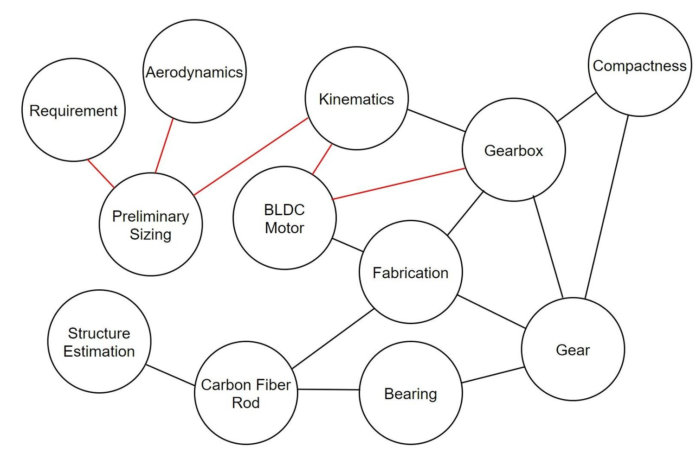

Reflection Over Spanning Tree Method

The local graph of gearbox (excluding other progress in aircraft dynamics and wing structure). The numbers on directed edges (arrows) indicates the time sequence. For annotated graph, please see this file
Two months ago, I said “solving a multi-disciplinary problem is like finding a maximum spanning tree of a graph. The weight of the edge corresponds to how closely the two disciplines are coupled together.” Furthermore, I believed that, to ensure that I deal with most important coupling first, I should apply Kruskal’s algorithm for finding such a tree.
I am still thinking whether I was wrong. I admit that this is not a tree but a graph with loops. I also admit that I didn’t completely follow' Kruskal’s algorithm. My question is: did I do the most important coupling first?

Simplified graph
Maybe I did. All those red couplings are indeed more important than others. If you look at the first graph, you can see that those red couplings are indeed made earlier than others. The result is, all those other objects are compromising for each other (such as bearings, gears, motors), but those important couplings in red did not compromise much.
Am I wrong? I am still thinking.